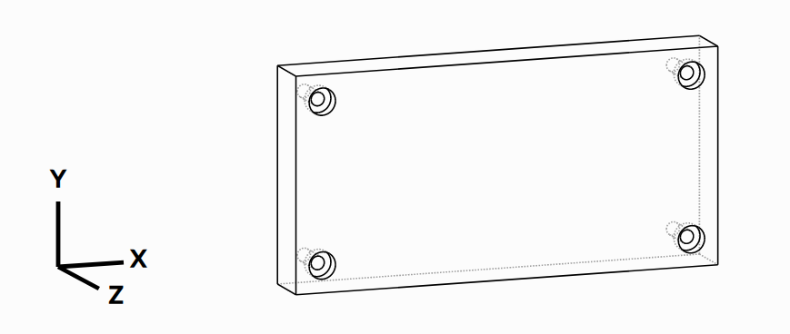

import cadquery as cq
result = (cq.Workplane(cq.Plane.XY())
.box(4,2, 0.5)
.faces(">Z")
.workplane()
.rect(3.5, 1.5, forConstruction=True)
.vertices()
.cboreHole(0.125, 0.25, 0.125, depth=None))
show_object(result)
